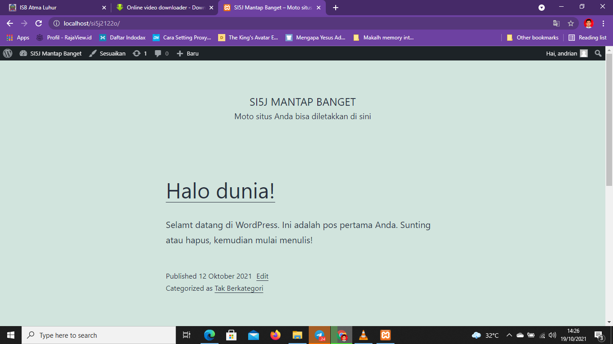
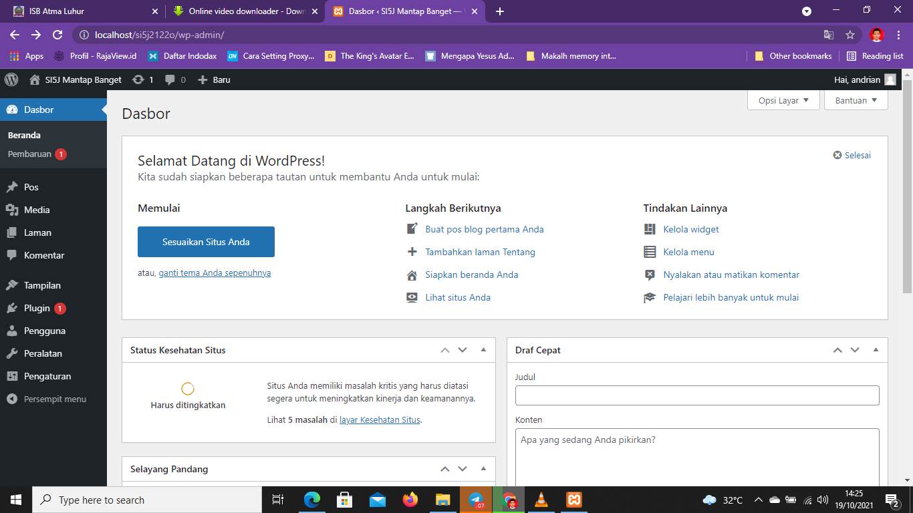
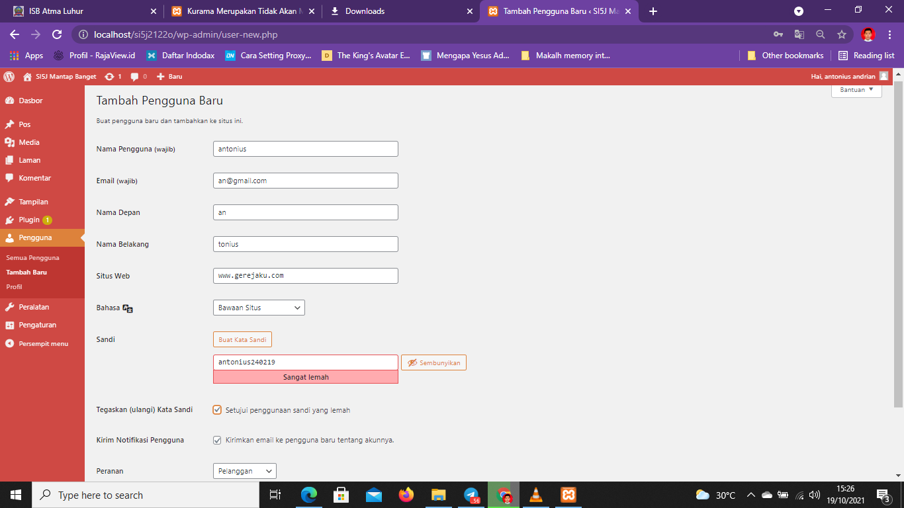
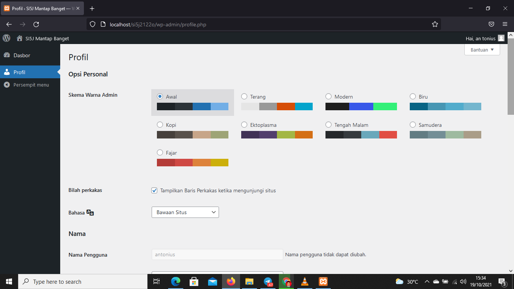
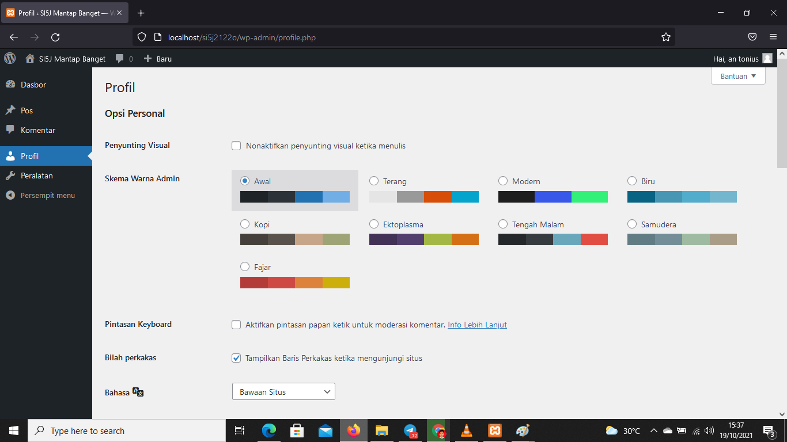
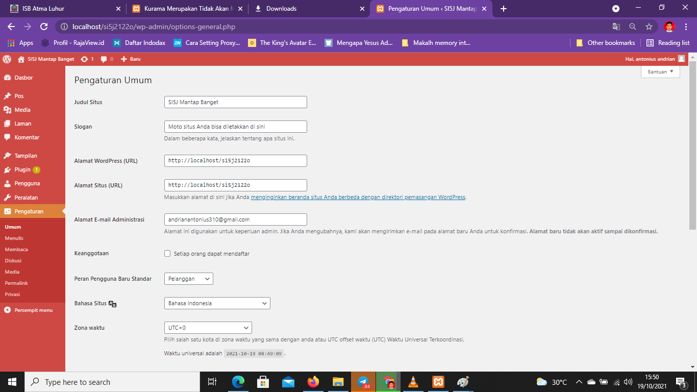

NIM: 1922500215
Nama: Andrian Antonius
Kelompok: SI5J
kesimpulan atau hasil pertemuan 2 yang saya ambil adalah:
- di dalam htdocs, mesti ada folder si5j2122o, sehingga pada browser bisa diakses dengan http://localhost/si5j2122o
- jika object not found (404), maka cek dulu nama folder antara htdocs dengan yang diketik di localhost
- jika ada tulisan error establishing database connection, cek dulu apakah mysql sudah running pada xampp control panel
- jika sudah running, buka wp-config.php pada folder si5j2122o, dan cek db_name. db name ini pastikan ada di phpmyadmin
- jika pada phpmyadmin belum ada nama databasenya, maka import dulu file sql bahan pertemuan ke 2 (hasil pertemuan ke 1)
- wordpress memiliki 2 sisi, 1 tampilan backend (untuk admin/dashboard) dan 1 nya lagi tampilan front end (untuk pengunjung/client area)
- untuk backend, harus login dulu di alamat http://localhost/si5j2122o/wp-admin
Berikut tampilan halaman web setelah di restore:

Berikut tampilan front end:
Berikut tampilan back end:

Berikut tampilan penyutingan visual end:

Untuk Menegubah Bentuk tulisan
Berikut tampilan Tambah Pegunna:

Pada bagian ini kita akan membuat pengguna baru degan user name baru dan pasword baru kita juga dapat mengatur peranan pengguna
Berikut tampilan ini merupakan contoh tampilan dari peran pengguna:

Berikut tampilan untuk admin untuk mengaturan peranan setiap pengguna:
semakin tinggi peranan yang diberikan semakin banyak yang kita bisa lakukan pada web
Berikut tampilan contoh apa bilah kita diberikan peranan kontributor:

Berikut tampilan Pengaturan:

- Pengaturan Umum untuk mengubah judul web,slogan,alamat wordpress,alamat situs,alamat email,keanggotan(untuk web banyak pengguna di one),peranan pengguna(apa bilah ada pengguna yang mendaftar langsung dialihkan sesuai dengan pengaturan pengguna sebelum nya)
, bahasa,zona waktu,tanggal,waktu,dll
- Pengaturan Penulis untuk mengatur kategori dari tulisan yang kita buat
- Pengaturan Membaca untuk mengatur tampilan pos yang baru,banyak nya tulisan yang tampil ,dan menghalagi mensin pencari
- Pengaturan Diskusi untuk mengatur komentar yang ada diweb kita siapa aja yang bisa komen atau yang tidak bisa dikomen dan mengatur komentar yang dapat ditampilkan
- Pengaturan Media untuk mengatur besarnya gamabr yang akan kita tampilkan
- Pengaturan Permalink untuk mengatur link yang akan kita tampilkan pada pengguna
- Pengaturan Privasi untuk mengatur pernyataan terhadap web kita bisa dipercaya atau tidaknya